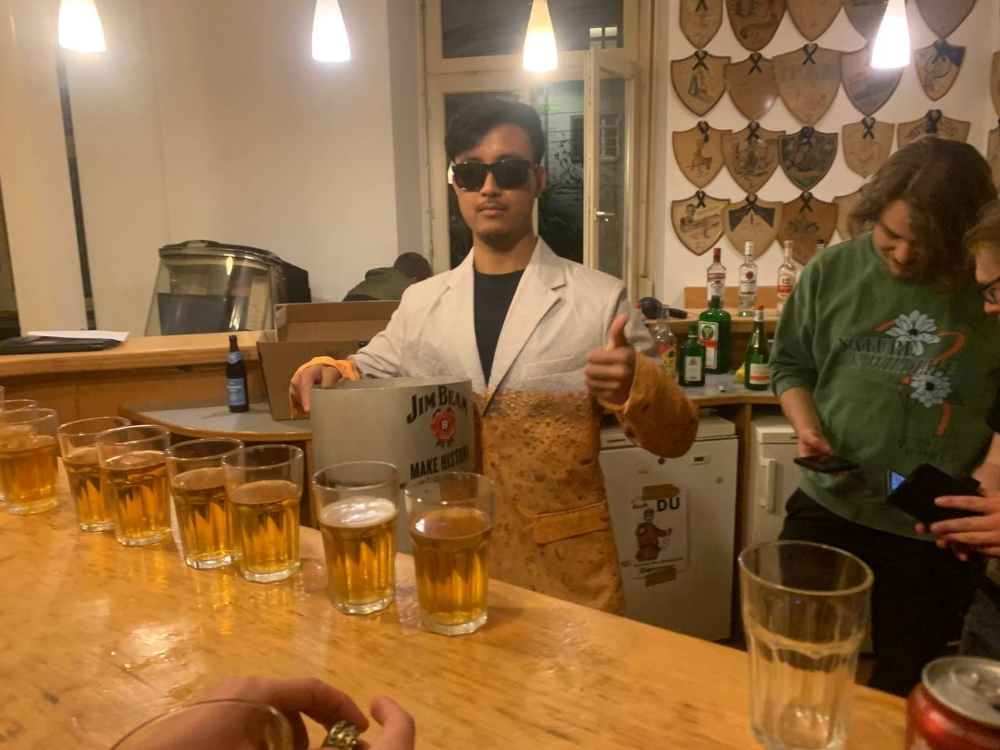
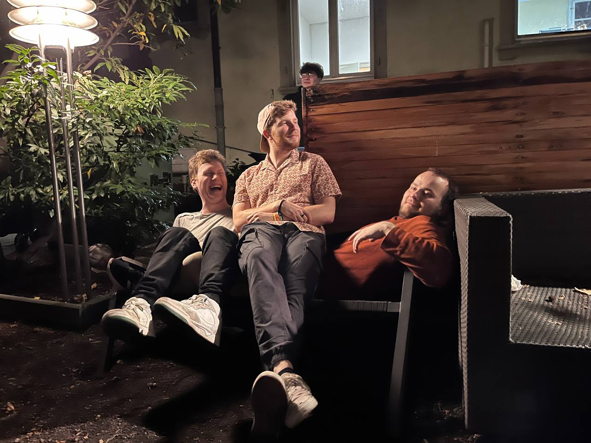

Wir über uns
Leitspruch
In dem Bedürfnis für den Wahlspruch gemeinsame und verbindende Vorstellungen zu entwickeln, hat sich die Akademische Verbindung Palato-Sinapia entschlossen, zum Hintergund von "Wissenschaft – Freundschaft – Frohsinn" einen Sinngehalt zu formulieren – getragen aus der Tradition der Verbindungen und ausgerichtet an den Erfordernissen der Zeit. Traditionen bestimmen unsere Ausrichtung, soweit sie Überzeugungen und Zielen förderlich sind. Persönlichkeiten aus Forschung, Lehre und Wirtschaft, die der Akademischen Verbindung Palato-Sinapia während ihres Studiums beigetreten und ihr lebenslang verbunden geblieben sind, legen Zeugnis ab von der zeitlosen Aktualität unserer Wertvorstellungen. Als weltanschaulich ungebundene und überparteiliche studentische Verbindung geben wir uns gemeinsam das Verständnis, im Sinne der nachfolgenden Formulierungen das Leben unserer Verbindung zu gestalten.
Wissenschaft: Im Wahlspruch der Akademischen Verbindung Palato-Sinapia steht der Begriff Wissenschaft an erster Stelle. Historisch gesehen war dies die entscheidende Triebkraft bei der Gründung, als ihre Statuten aus 1947 sie zunächst als "Wissenschaftliche Gesellschaft" auswiesen. Wissenschaftliche Betätigung ist Zukunftsgestaltung! Für einen erfolgreichen Weg in die Zukunft bildet Wissen die Basis für eigenständiges Denken, wie auch für die Kompetenz und Befähigung, verantwortlich zu handeln. Unser Verständnis von wissenschaftlicher Betätigung ist nicht nur das Suchen nach Erkenntnis auf mathematisch-naturwissenschaftlichem, wie auch geisteswissenschaftlichem Gebiet, sondern auch die methodische Vorbereitung auf den späteren Beruf. Ordnung, Mobilität, Teamfähigkeit und Kreativität sind u.a. hervorzuhebende Anforderungen im Berufsleben. Kreativität entsteht verstärkt an Schnittstellen und Reibungsflächen. Sie braucht zu ihrer Entfaltung Integrationsfähigkeit und soziale Kompetenz. Eine Gemeinschaft wie die Akademische Verbindung Palato-Sinapia setzt sich das Ziel, hier fördernd und anregend zu wirken, zu wertfreier Vorurteilsfreiheit zu erziehen und Gestaltungsfreiheit in eigener Verantwortung zu gewähren.
Freundschaft: Unter den Mitgliedern der Akademischen Verbindung Palato-Sinapia besteht eine lebenslang währende, freundschaftliche und verpflichtende Bindung, sowohl gegenüber der Gemeinschaft als auch ihren Mitgliedern im Einzelnen. Die Mitglieder bezeichnen sich untereinander als Verbindungsbrüder. Die Mitgliedschaft in der Verbindung ist das lebendige Teilhaben an allen Vorgängen, die die Gemeinschaft und die einzelnen Verbindungsbrüder betreffen. Teilhaben heißt Geben und Nehmen. Aufgaben und Pflichten für die Gemeinschaft werden von allen Mitgliedern übernommen. Sie bringen ihre eigene Persönlichkeit und Vorstellungen mit ein und versuchen innerhalb der Gemeinschaft, das für den Kreis bestmögliche Ergebnis in den gegenseitigen freundschaftlichen Beziehungen, in den gemeinsamen Handlungen und in der Gestaltung des Verbindungslebens zu erreichen. Hierzu gehört auch, wenn nötig, der Mut zur Auseinandersetzung über den einzuschlagenden Weg innerhalb der demokratisch organisierten Gemeinschaft und das versöhnliche Wort, das den auftretenden Konflikt freundschaftlich beendet. Die Teilhabe und Verpflichtung der Verbindung gegenüber endet nicht mit dem Abschluss des Studiums, sondern besteht im weiteren Leben fort. Aktive Verbindungsbrüder, die als Alte Herren in das Berufsleben einsteigen, bleiben auch weiterhin dem Leben ihrer Verbindung und ihrer jeweiligen Aktivitas verbunden. Der Lebensbund bewährt sich unter den Verbindungsbrüdern mit fortschreitendem Lebensalter. Die Freundschaften, die sich meist zwischen den Altersgleichen während de Studienzeit entwickeln, zeigen ihre Verlässlichkeit häufig in späteren Jahren. Die Altherrenschaft ist sichtbarer Ausdruck des Lebensbundprinzips. Sie ist nicht nur der Freundeskreis von Altersgenossen Ehemaliger, sondern sucht und pflegt den Kontakt zu den Aktiven und steht ihnen in allen Angelegenheiten unterstützend und anregend zur Seite. Sie nimmt am Verbindungsleben in freundschaftlicher Verbundenheit rege teil. Die gelebte Freundschaft in der Verbindung ist das lebendige Zeichen ihrer Daseinsberechtigung.
Frohsinn: Der Frohsinn ist der heitere Begleiter beim ernsten Bemühen um Wissen und Erkenntnis im Studium; er hilft über Klippen und Probleme und beflügelt bei erzielten Erfolgen. Er überhöht und festigt die Freundschaft, die sehr oft "frohen Sinnes" entsteht. Der Frohsinn wird im Gleichklang des Freundeskreises besonders nachdrücklich erlebt. Er begleitet den Einzelnen im täglichen Leben und lässt ihn den Alltag besser meistern. Er wird so eine Quelle für neue Ideen, für neue Tatkraft und ein glückliches Lebensgefühl. Der Frohsinn im Freundeskreis überdeckt ein breites Spektrum, vom heiteren Gespräch in geselliger Runde über das gemeinsame Erleben von frohen Festen und Veranstaltungen gesellschaftlicher oder kultureller Art bis hin zu Fahrten, Wanderungen und sportlichen Aktivitäten.
Verbindungshaus
Die Akademische Verbindung Palato-Sinapia hat ihren Sitz in Karlsruhe. Unser Haus steht in unmittelbarer Nähe zum Campus Süd des KIT am Durlacher Tor. Es wurde 1871 erbaut und steht unter Denkmalschutz. Wir verfügen über insgesamt 5 Stockwerke und ca. 200m² Gemeinschaftsfläche auf denen sich die Studentenzeit gut aushalten lässt. In den oberen Stockwerken haben wir mehrere Zimmer für unsere Füxe ausgebaut. Hier kannst Du in den ersten ein bis zwei Jahren ein Zimmer direkt auf dem Haus bekommen und so das Haus und die vielen Bundesbrüder besser kennen lernen.
Ein großes Wohnzimmer mit Bar und Tischkicker lädt zum Verweilen ein. Hier treffen wir uns auch außerhalb von Veranstaltungen zum gemeinsamen abendlichen Gedankenaustausch auf das ein oder andere Bier. Sehr selten, dass dieses Zimmer abends verlassen ist. Im gleichen Stockwerk befindet sich außerhalb des Hauses unser gemütlicher Hinterhof, der in den heißen Sommermonaten Kühlung verspricht. Der selbst gemauerte Grill lädt dabei des Öfteren zum Grillen ein
Im 1. Obergeschoss befindet sich unser traditionsreicher Kneipsaal. Hier werden die meisten offiziellen Veranstaltungen unseres Semesterprogramms abgehalten, dazu zählen vielen Kneipen, Bälle oder Feuerzangebowlen, aber auch für wissenschaftliche Vorträge unserer Studierenden oder für Vortragsreihen unserer Alten Herren aus dem Berufsleben bietet unser Kneipsaal ein passendes Ambiente und genügend Raum.
In unserem Keller befinden sich neben der Heizungsanlage viele Partyräume, welche mindestens einmal im Semester zu unserer billich-willich-Party dekoriert werden. Aber auch Geburtstagsfeiern finden hier ein stabiles Partyambiente.
Tradition & Moderne
Die Akademische Verbindung Palato-Sinapia ist eine seit 1871 währende Gemeinschaft, in der Tradition und Moderne eng miteinander verknüpft werden. Die Kombination dieser beiden Punkte stellt immer wieder teils vergangene Traditionen auf den Prüfstand und hinterfragt moderne zeitgemäße Änderungen unserer Gesellschaft.
Studentenverbindungen pflegen verschiedene Zeremonien zu Anlässen wie Semesterbeginn, Diplomfeiern, Stiftungsfesten und mehr. Diese Veranstaltungen sehen auf den ersten Blick antiquiert aus, stellen aber ein verbindendes Element zwischen verschiedensten Generationen dar, welches einen hohen Wiedererkennungswert wieder gibt. Als antiquiert und überholt sehen wir dagegen zum Beispiel das Tragen von Farben in Form von Bändern oder Mützen, unsere Mitglieder zeichnen sich vielmehr durch Individualität und nicht durch drei Streifen über der Brust aus.
Traditionell haben wir verschiedene Stati unserer Mitglieder. Ein neues Mitglied ist im ersten Jahr ein sogenannter Fux mit verminderten Rechten einhergehend mit weniger Pflichten, vergleichbar ist das mit einer Probezeit in einem Unternehmen. Die Bezeichnung "Fux" mag antiquiert klingen, trifft aber immer noch den Zeitgeist und unseren gemeinsamen Umgang innerhalb unserer Gesellschaft.
Ebenfalls aus der Tradition pflegen wir ein Semesterprogramm, dass sich am Studienrahmen des KIT anlehnt. Während des Semesters werden mehrere Veranstaltungen auf dem Haus abgehalten, zu denen nicht nur aktive Mitglieder aus Karlsruhe, sondern auch unsere Alten Herren außerhalb von Karlsruhe anreisen. Diese traditionellen Veranstaltungen bilden einen wichtigen Aspekt, durch den die Gemeinschaft und der gemeinsame Austausch gepflegt werden.
